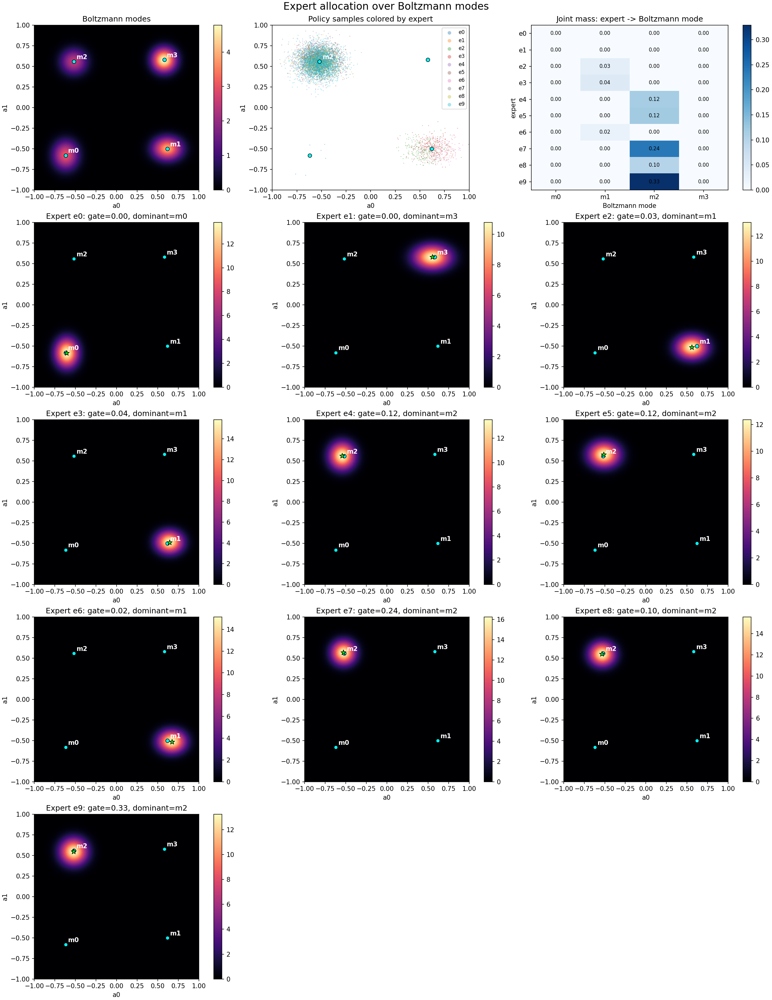
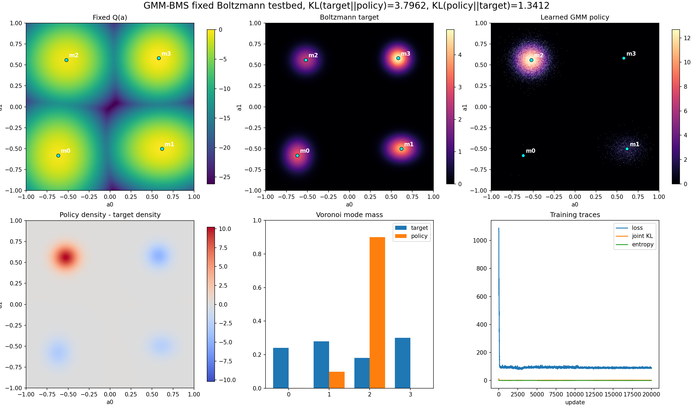

GMM-BMS Fixed Boltzmann Testbed
Fully JAX-jitted / Flax neural-parameterized Gaussian-mixture sampler trained
with a BMS-style fixed-point bridge regression objective on a fixed two-dimensional
Boltzmann density. The sampler after training is the explicit density
q_phi(a)=sum_k pi_k N(a; mu_k, Sigma_k).
Final grid KLs on [-1,1]^2: KL(target||policy)=3.7962, KL(policy||target)=1.3412. See summary.json for parameters and metrics.
Expert Allocation
Expert-colored samples, per-expert densities, and the mass each expert assigns to each Boltzmann mode.

Policy Fit
Fixed Q landscape, Boltzmann target density, learned GMM policy density, residual, mode masses, and traces.
